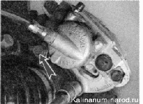
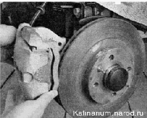

Суппорт переднего тормозного механизма снятие и установкаСнятие 1. Подготавливаем автомобиль к выполнению работы. 2. Снимаем колесо. 3. Извлекаем шланг из кронштейна амортизаторной стойки. 4. Через смотровое отверстие в скобе суппорта немного раздвигаем тормозные колодки так, чтобы они отошли от тормозного диска. 5. Ослабляем затяжку нижнего наконечника шланга. 6. Торцовым ключом на 17 мм отворачиваем два болта крепления суппорта к поворотному кулаку. 
7. Снимаем суппорт в сборе. Не нажимайте педаль тормоза при снятом тормозном суппорте. 8. Вращая суппорт, выворачиваем из него нижний наконечник тормозного шланга и снимаем суппорт с автомобиля. Установка 1. Устанавливаем суппорт в обратной последовательности, заменив уплотнительное кольцо тормозного шланга новым. 2. Удаляем из системы гидропривода тормозов воздух и убеждаемся в герметичности соединения наконечника шланга и суппорта.
|